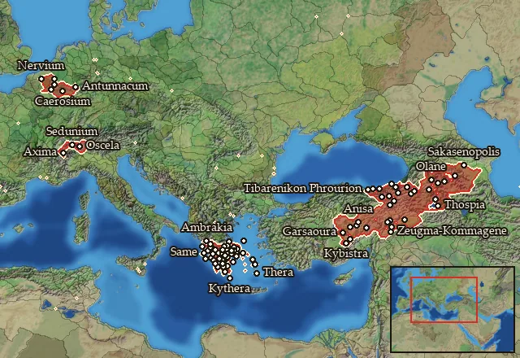

Legio XII Antiqua Paterna Fulminata 1st Cohort
Class: heavy · Category: infantry · Men per unit: 60
Reforms: Unlocked by Named Legions are now available
Stats
| Rank in roster | ||
|---|---|---|
| Men per unit | 60 | █████████· 87% |
| Attack | 14 | ███████··· 67% |
| Charge bonus | 14 | █████····· 51% |
| Defence | 41 | ████████·· 77% |
| · armour | 14 | ████████·· 82% |
| · defence skill | 20 | █████····· 47% |
| · shield | 7 | █████████· 91% |
| Morale | 14 | ████████·· 79% |
| Discipline | Normal | |
| Training | Highly trained | |
| Recruitment cost | 2,720 dn | ████████·· 76% |
| Upkeep per turn | 1,000 dn | █████████· 89% |
| Turns to recruit | 3 |
Weapons
| Primary | Secondary | Primary | Secondary | Primary | Secondary | Primary | Secondary | ||||
|---|---|---|---|---|---|---|---|---|---|---|---|
| Attack | 14 | 13 | Type | thrown · blade | melee · blade | Projectile | pilum_early | — | Ammunition | 2 | — |
| Charge bonus | 14 | 14 | Damage | piercing | piercing | Range | 40 | — | Properties | Armour-piercing (counts only half the target's armour) · used just before charging into combat | — |
Defence
| Primary | Secondary | Primary | Secondary | Primary | Secondary | Primary | Secondary | ||||
|---|---|---|---|---|---|---|---|---|---|---|---|
| Total | 41 | — | Armour | 14 | — | Defence skill | 20 | — | Shield | 7 | — |
Condition and terrain
| Hit points | 1 | Ground: scrub / sand / forest / snow | 0 / -2 / 0 / -2 | Charge distance | 30 | Formations | Square · Testudo |
Technical stats
| Time between blows (primary / secondary) | 2.5 s / 2.5 s | Collision mass per man (1.0 is normal) | 1.41 | Spacing between men: close / loose | 1 × 1.2 m / 2 × 2.4 m | Default ranks | 5 |
| Extra fatigue in hot climates | 5 |
In battle: Can sap · A command unit
Who can recruit it
No faction has this on its core roster: it can be raised only in the provinces below.
A further 4 factions can raise it in the provinces below.
Exactly what a settlement must have, route by route (2)
| Building | Also requires | Building | Also requires | ||||
|---|---|---|---|---|---|---|---|
| Direct Rule | Tier 3 Military Industrial Complex · Tier 2 Colony · Legio xii antiqua paterna fulminata early · Named Legions are now available | Homeland | Tier 2 Military Industrial Complex · Legio xii antiqua paterna fulminata early · Named Legions are now available |
Areas of recruitment

Legio xii antiqua paterna fulminata early: 87 provinces
Achaia · Acheloos · Aitolia · Akarnania · Akilisene · Ambrakikos Kolpos · Amphilochia · Anatolike Achaia · Anatolike Kyklades · Ano Araxes · Ano Euphrates · Argolis · Arkadia · Attike · Basoropeda · Boiotia · Boreia Lychnitis · Brasiai · Caerosia-Paemania · Ceutronia · Ceutronia-Levacia · Chaldaia-Pontos · Condrusia-Segnia · Dirphysia · Drilaia · Dytike Kyklades · Elis · Euboia · Garsaouritis · Geidumnia · Hellenike Makronia · Hellenike Mossynoikia · Hellenike Tibarenia · Hesperos Achaia · Hesperos Sophene · Histiaia · Kalliste · Kappadokia · Kappadokike Kilikia · Karanitis · Kataonia · Kato Kommagene · Kephallenia · Kommagene · Korinthia · Kythera · Lakonia · Lakonikos Kolpos · Lepontia · Leukas · Lychnitis · Makronia · Mantineia · Megale Armenia · Megaris · Melitene · Messenia · Mikra Armenia · Morimene-Chammanene · Mossynoikia · Nervia · Ocheia · Olygirtos · Opountia Lokris · Ozolia Lokris · Peiraieus · Phokis-Doris · Pisatis · Pleumoxia-Grudia · Poimandris · Pytho · Sakasene · Saraouene-Laouiniasene · Sedunia-Uberia · Sikyonia · Skyros · Skythenia · Sophene · Syspiritis · Taronitis · Tegeatis · Thebai · Tibarenia · Triphylia · Troizen · Tyanitis · Zakynthos